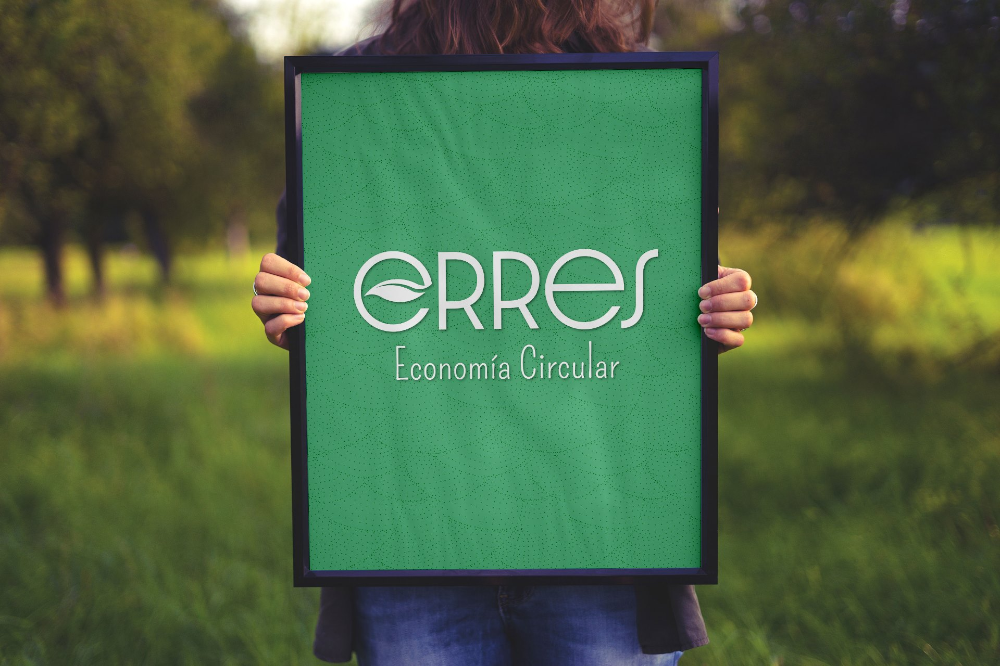

Nosotros
Trabajamos para resolver un problema enorme: “Salvar el planeta”. La buena noticia es que tiene solución. El punto es, que no depende de científicos, grandes innovadores, gobernantes… depende de todos y c/u de nosotros.Aun tenemos tiempo. Aunque no sabemos cuánto?!! Por eso, el momento de actuar colaborativamente, es AHORA.Si no somos parte de la Solución, somos parte del Problema.

¿Qué buscamos?
Cambiar el modo en que nos relacionamos con el consumo, sumando conciencia del impacto que eso genera en nuestro planeta.
Minimizando la generación sistémica de residuos, especialmente de plásticos de un solo uso, cuya utilidad es de pocos minutos pero su tiempo contaminando el medio ambiente es eterno, ya estaremos más cerca de alcanzar la solución. Que NO es una sola.
No existe “LA” solución!!! Si hubiera una única solución a las problemáticas ambientales, ya se hubieran resuelto hace rato!! Es tanta la complejidad de la crisis climática a la que hemos llegado que la multiplicidad e interconectividad en las soluciones es completamente necesaria. Por eso somos TODOS necesarios!!
Somos parte del problema, pero lo bueno es que podemos (y debemos) ser parte de la SOLUCIÓN.
¿Qué y cómo lo hacemos
Todo el tiempo nos preguntamos, cuál será nuestro granito de arena?, ¿Dónde agregaremos valor?, ¿Qué vamos a sumar?, ¿Cómo nos vamos a acercar al propósito que nos guía?
Así, definimos que nuestro camino será el de acompañar personas, comunidades, empresas y organismos gubernamentales en el proceso de cambio sistémico hacia un consumo consciente y responsable, rediseñando hábitos, operaciones, normas y costumbres.
Creemos que la “Basura” es algo increíble!!! Algunos de nosotros incluso, amamos la basura. Vemos en ella un montón de recursos que fácilmente pueden volverse un insumo, un capital para quien vea su potencial.


La basura no es mala por sí misma. Es nuestro vínculo con ella lo que necesita modificarse. Un consumo consciente y responsable será, sin duda, el camino ineludible a tomar por todos y cada uno de nosotros. De lo contrario….. no habrá vuelta atrás.
No pretendemos que la gente deje de comprar lo que necesita. Lo que buscamos es que antes de consumir Repensemos si eso que estamos por comprar, es verdaderamente necesario o no. Si no lo es, Rechazarlo, y si lo es, elegir esos productos que no contengan plástico, Reemplazandolos por otros más sustentables, Resignificando y Revalorizando lo natural. Si eso no fuera posible (porque aún falta mucho de Rediseño en los productos que consumimos), debemos ser Responsables de los residuos que generamos, buscando alternativas de destino, donde sean Reutilizados o Reciclados, colaborando con la Economía Circular y siendo así, parte de la solución.
Desde Erres, nos proponemos estar ahí, en el camino de ordenar y mejorar el vínculo con la basura, ofreciendo alternativas sustentables, amigables con el planeta y cocreando estrategias, haciendo futuros posibles, juntos.

¿Cómo lo lograremos? ¿De qué manera?
Con Educación Ambiental y alternativas amigables más accesibles, para que todos nos ocupemos y seamos parte de la Solución.
Desde Erres actuamos, intervenimos y/o nos involucramos sobre 3 niveles: el cultural (hábitos, conciencia, información), el operativo (procedimientos, procesos, productos, servicios) y el de las normas (regulaciones nacionales, internacionales).
La clave es la conciencia socioambiental, que sólo se logra con información y formación, pero también con el codiseño de estrategias, el involucramiento y el trabajo colaborativo.
Queremos conformar una red de agentes de cambio que no sólo se involucren en la Reacción, sino en la Acción, inspirando a muchos otros.
¿Quiénes Somos?
Somos Erres, una empresa de triple impacto que nació en plena crisis mundial, la climática. Además de habernos consolidado en plena pandemia del Covid-19.
Somos un grupo de personas que creemos que los cambios colaborativos, no sólo son posibles sino también, necesarios. Sabemos que apostar y trabajar por el bien común es el trabajo más placentero del universo, que tener un propósito tan bello como generar conciencia ambiental y brindar alternativas para cuidar nuestra casa común, es supremo.
Confiamos en el poder que cada uno tiene para hacer la diferencia, sumando su granito de arena.
Nos unimos, porque de verdad creemos que sólo de esta forma podremos alcanzar nuestra misión. Valoramos las alianzas, la cercanía y la confianza de los unos a los otros, y de esa forma caminamos.

Gabriela Real
Directora de Comunidad
“Convencida de que el tiempo es hoy, es ahora y si deseamos ver un futuro mejor, lo tenemos que generar entre todos, porque la fuerza de uno, no alcanza. Somos en un Nosotros y si todos ganan…. yo gano. Erres es la posibilidad de sumarme y sumar a otros en algo que está mucho más allá de mí.”

Marina Balcone
Directora de Innovación
“Amo la naturaleza, los animales y las plantas, por eso me da tristeza y bronca ver cómo los estamos destruyendo. Espero, desde Erres, ayudar a que tomemos conciencia del daño que generamos al medio ambiente y trabajar para cuidar nuestro hermoso y único planeta.”

Nicolás Real
Director Comercial
“Mi motivación parte de la necesidad de hacer que las cosas cambien y colaborar en la formación de sociedades respetuosas con el medio ambiente y responsables con los efectos que nuestros hábitos generan. Tenemos mucho por hacer y eso es verdaderamente apasionante!”

Belen Maggi
Directora Financiera
“Soy parte de ERRES porque creo que es posible transformar la realidad a través del desarrollo de emprendimientos que pongan el eje en lo social, ambiental y en la diversidad.”
¿Por qué Erres?
Cuando empezamos a pensar en nuestra identidad, se nos cruzaron un montón de conceptos difíciles de seleccionar y ordenar. Elegir nuestro nombre se convirtió en un momento de profunda reflexión y análisis.
Finalmente, decidimos incluir a todos esos conceptos que nos representan, inspiran y motivan. Elegimos llamarnos ERRES para representar todas las “R” posibles, no sólo las clásicas 3, ni las 4 más nuevas , ni tampoco las últimas tendencias de 9 erres, sino todas las Erres posibles.